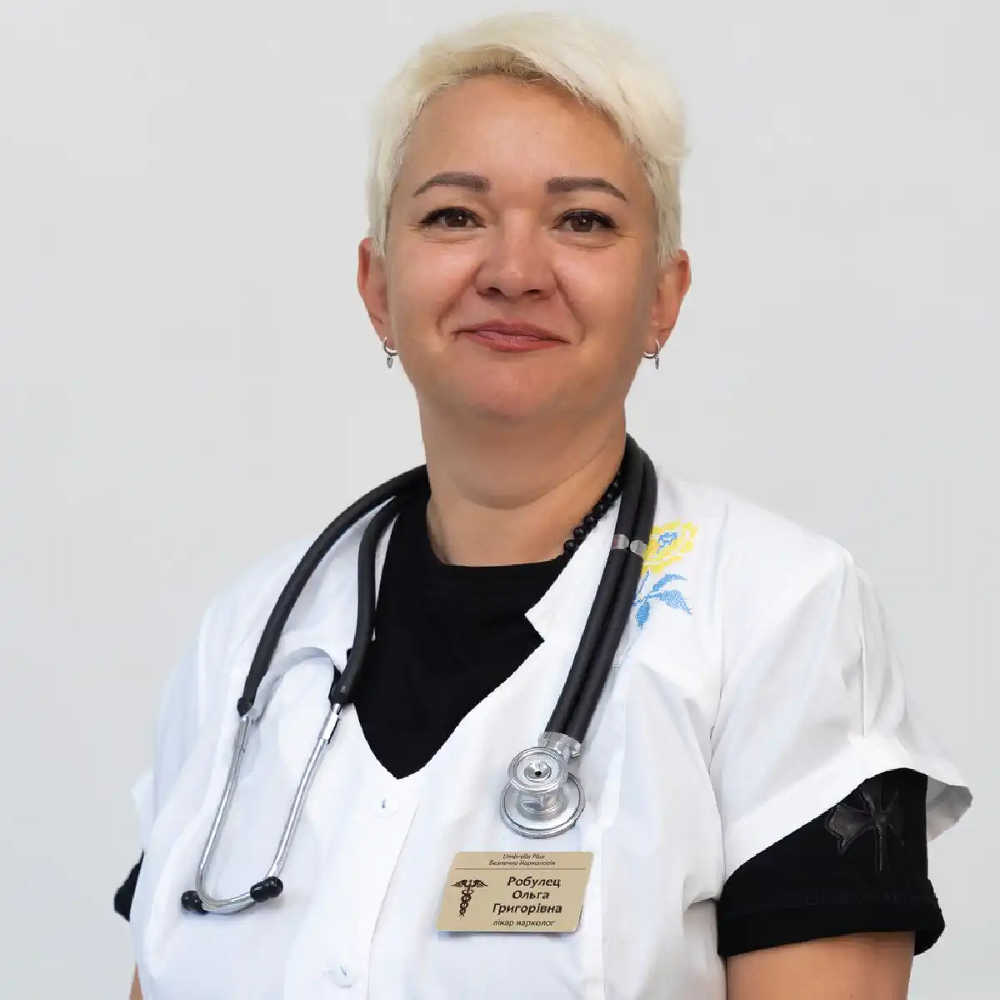

+38(068) 79 72 782
+38(068) 79 72 782Лечение алкоголизма в Черкассах
Помогаем вернуться к жизни без алкоголя


Бесплатная консультация, работаем круглосуточно 24/7
Помогаем вернуться к жизни без алкоголя

Алкогольная зависимость — это серьёзное хроническое заболевание, которое затрагивает не только физическое здоровье человека, но и его психоэмоциональное состояние, социальные связи и качество жизни в целом. Без своевременного лечения проблема может прогрессировать, приводя к ухудшению состояния организма и разрушению привычного образа жизни. Лечение алкоголизма в Черкассах требует комплексного подхода, включающего медицинскую помощь, психологическую поддержку и последующую реабилитацию. Только системная работа позволяет добиться устойчивого результата и снизить риск повторных срывов.
На начальном этапе особое внимание уделяется детоксикации организма. Это необходимая процедура, направленная на выведение токсических веществ, восстановление водно-электролитного баланса и нормализацию работы внутренних органов. Уже после первых часов терапии пациент может почувствовать облегчение: уменьшается головная боль, нормализуется сон, снижается тревожность и общее напряжение.
Следующим этапом является стабилизация состояния и медикаментозная поддержка. Врач-нарколог подбирает индивидуальную схему лечения с учётом возраста пациента, длительности употребления алкоголя и наличия сопутствующих заболеваний. Это позволяет не только улучшить самочувствие, но и снизить тягу к алкоголю на физиологическом уровне. Не менее важной частью лечения является психологическая помощь. Зависимость формируется не только на физическом, но и на поведенческом уровне, поэтому работа с психологом помогает выявить причины употребления, научиться справляться со стрессом и сформировать новые, здоровые модели поведения. Поддержка специалистов и близких людей значительно повышает шансы на успешное восстановление. После основного курса лечения рекомендуется пройти этап реабилитации. Он направлен на закрепление результата, восстановление социальной активности и возвращение человека к полноценной жизни. В этот период важно сформировать устойчивую мотивацию к трезвости и научиться предотвращать возможные рецидивы.
Лечение алкогольной зависимости проходит поэтапно и включает несколько ключевых направлений. На первом этапе проводится диагностика состояния пациента и оценка степени зависимости. Врач-нарколог собирает анамнез, оценивает общее состояние здоровья, выявляет сопутствующие заболевания и определяет тактику дальнейшего лечения. Такой индивидуальный подход позволяет сделать терапию максимально эффективной и безопасной. Далее следует детоксикация организма, направленная на выведение токсинов и стабилизацию состояния. Этот этап особенно важен при длительном употреблении алкоголя или запоях. С помощью инфузионной терапии восстанавливается водно-электролитный баланс, нормализуется работа сердечно-сосудистой системы, печени и нервной системы. Уже в первые сутки лечения наблюдается значительное улучшение самочувствия пациента.
После этого назначается медикаментозная поддержка, которая помогает снизить тягу к алкоголю и восстановить работу внутренних органов. Препараты подбираются индивидуально и могут включать средства для нормализации сна, уменьшения тревожности, восстановления функций печени и защиты нервной системы. В ряде случаев применяется кодирование от алкоголя как дополнительный метод закрепления результата. Серьезным этапом является психологическая помощь и работа с причинами зависимости. Специалисты помогают пациенту осознать проблему, выявить триггеры употребления и научиться справляться со стрессовыми ситуациями без алкоголя. Формируются новые поведенческие стратегии, направленные на поддержание трезвости и улучшение качества жизни.
Завершается лечение реабилитацией и формированием устойчивого трезвого образа жизни. На этом этапе пациент получает поддержку в социальной адаптации, восстанавливает отношения с близкими и возвращается к привычной деятельности. Регулярное наблюдение специалистов и участие в программах поддержки позволяют снизить риск рецидива и закрепить достигнутый результат на длительный срок.
Своевременное распознавание зависимости позволяет начать лечение на ранних этапах и значительно повысить его эффективность. Чем раньше человек или его близкие обращают внимание на тревожные изменения, тем больше шансов предотвратить развитие тяжёлых последствий для здоровья и психики. К основным признакам относятся:
Со временем к этим симптомам могут присоединяться и другие проявления. Человек начинает оправдывать своё употребление, скрывать факты приёма алкоголя, избегать разговоров на эту тему. Возникают проблемы в семье, на работе, снижается ответственность и концентрация внимания. Постепенно алкоголь становится центральной частью жизни, вытесняя прежние интересы и цели.
Физическое состояние также ухудшается: появляются нарушения сна, скачки артериального давления, проблемы с пищеварением, боли в области печени и сердца. Организм перестаёт нормально функционировать без очередной дозы алкоголя, что свидетельствует о формировании устойчивой зависимости. Игнорирование этих симптомов может привести к прогрессированию заболевания и развитию осложнений. На поздних стадиях повышается риск серьёзных заболеваний — поражения печени, сердечно-сосудистой системы, нервной системы, а также психических расстройств. Кроме того, возрастает вероятность несчастных случаев и социальной дезадаптации.
Современная наркология предлагает эффективные методы лечения, которые подбираются индивидуально с учётом состояния пациента, стажа употребления и наличия сопутствующих заболеваний. Такой персонализированный подход позволяет добиться более стабильного и длительного результата. К основным методам относятся медикаментозная терапия, психотерапия, кодирование и программы реабилитации.
Медикаментозное лечение направлено на восстановление организма после длительного воздействия алкоголя. Оно помогает нормализовать работу внутренних органов, снизить проявления абстинентного синдрома, улучшить сон и общее самочувствие. В ряде случаев применяются препараты, уменьшающие тягу к алкоголю и формирующие отрицательную реакцию на его употребление.
Психотерапия играет ключевую роль в процессе выздоровления. Индивидуальные и групповые занятия помогают пациенту осознать причины зависимости, проработать внутренние конфликты и научиться справляться со стрессом без употребления алкоголя. Формируются новые поведенческие модели, которые способствуют сохранению трезвости в долгосрочной перспективе.
Кодирование от алкоголя является дополнительным методом, который помогает закрепить результат лечения. Оно может проводиться различными способами — медикаментозными или психотерапевтическими — и направлено на формирование устойчивого отказа от употребления спиртного.
Реабилитационные программы завершают процесс лечения и помогают пациенту вернуться к полноценной жизни. В этот период особое внимание уделяется социальной адаптации, восстановлению отношений с близкими и формированию новых жизненных целей. Поддержка специалистов и участие в программах восстановления значительно снижают риск рецидива. Комплексный подход позволяет воздействовать не только на физическую зависимость, но и на психологические причины употребления. Именно сочетание медицинской помощи и психотерапии даёт возможность не просто временно отказаться от алкоголя, а сформировать устойчивый трезвый образ жизни.
Вывод из запоя — это первый и важный этап лечения алкогольной зависимости. Он позволяет стабилизировать состояние пациента, устранить интоксикацию и снизить нагрузку на организм. На этом этапе основная задача — безопасно вывести человека из состояния длительного употребления алкоголя и предотвратить развитие осложнений. Процедура может проводиться как на дому, так и в условиях клиники, в зависимости от состояния человека. При лёгкой и средней степени интоксикации помощь может быть оказана на дому, что обеспечивает комфорт и снижает стресс для пациента. В более тяжёлых случаях, при наличии сопутствующих заболеваний или выраженных симптомов, рекомендуется лечение в стационаре под круглосуточным наблюдением специалистов.
В процессе вывода из запоя проводится инфузионная терапия (капельницы), направленная на очищение организма от токсинов, восстановление водно-электролитного баланса и нормализацию работы внутренних органов. Дополнительно применяются препараты для поддержания сердечно-сосудистой системы, печени, нервной системы, а также средства для нормализации сна и снижения тревожности.
Уже в первые часы после начала лечения пациент отмечает улучшение состояния: уменьшается слабость, проходит тошнота, нормализуется давление и сердечный ритм. Важно понимать, что вывод из запоя — это не полноценное лечение зависимости, а лишь первый шаг к восстановлению. После стабилизации состояния рекомендуется продолжить лечение, включающее медикаментозную поддержку, психологическую помощь и, при необходимости, кодирование от алкоголя. Только комплексный подход позволяет закрепить результат и снизить риск повторных запоев в будущем.
Стоимость лечения алкоголизма в Черкассах начинается от 2199 грн.
| Популярные услуги | Цена |
|---|---|
| Нарколог Черкассы | От 2199 грн |
| Капельница от алкоголя | От 2199 грн |
| Вывод из запоя на дому | От 2199 грн |
| Кодирование от алкоголизма | От 6000 грн |
Медикаментозная терапия направлена на восстановление организма, снижение тяги к алкоголю и предотвращение осложнений. Этот этап лечения играет ключевую роль, поскольку позволяет не только улучшить физическое состояние пациента, но и создать основу для дальнейшего отказа от употребления спиртного. Препараты подбираются индивидуально с учётом состояния пациента, длительности употребления алкоголя, возраста и наличия сопутствующих заболеваний. Такой подход обеспечивает максимальную эффективность и безопасность терапии.
В рамках медикаментозного лечения могут применяться средства для детоксикации и восстановления водно-электролитного баланса, препараты для поддержки печени и сердечно-сосудистой системы, витамины группы B для нормализации работы нервной системы, а также седативные средства для снижения тревожности и улучшения сна. Отдельное внимание уделяется препаратам, которые помогают снизить тягу к алкоголю. Они воздействуют на определённые механизмы зависимости, уменьшая желание употреблять спиртное и облегчая период отказа. В некоторых случаях используются препараты, формирующие отрицательную реакцию на алкоголь, что дополнительно укрепляет мотивацию к трезвости. Медикаментозная терапия проводится под контролем врача, что позволяет своевременно корректировать лечение и отслеживать динамику состояния пациента. Самостоятельный приём препаратов без консультации специалиста может быть неэффективным и даже опасным.
Психологическая помощь играет ключевую роль в лечении зависимости. Она помогает выявить причины употребления, изменить поведенческие модели и сформировать устойчивую мотивацию к трезвости. Зависимость формируется не только на физическом уровне, но и на уровне мышления, привычек и эмоциональных реакций, поэтому без проработки психологических аспектов добиться стабильного результата крайне сложно. Работа с психологом или психотерапевтом значительно повышает эффективность лечения. Специалист помогает пациенту осознать проблему, принять необходимость изменений и выработать новые способы реагирования на стресс, тревогу и жизненные трудности. Постепенно человек учится справляться с внутренними конфликтами без употребления алкоголя.
В процессе терапии особое внимание уделяется выявлению триггеров — ситуаций, эмоций или окружения, которые провоцируют желание выпить. Пациент учится распознавать такие моменты и контролировать своё поведение, избегая срывов. Это важный навык, который помогает сохранять трезвость в долгосрочной перспективе. Используются различные методы психотерапии: когнитивно-поведенческая терапия, мотивационное консультирование, поддерживающая терапия. Они направлены на изменение мышления, формирование ответственности за собственную жизнь и укрепление уверенности в своих силах.
Также важной частью является работа с самооценкой и восстановлением личностных ресурсов. Зависимость часто сопровождается чувством вины, стыда и потерей уверенности, поэтому психологическая поддержка помогает вернуть внутреннюю опору и повысить качество жизни. При необходимости проводится работа с семьёй пациента. Поддержка близких играет важную роль в процессе выздоровления, а грамотное взаимодействие внутри семьи помогает создать благоприятную среду для восстановления.
Реабилитация направлена на восстановление физического и психоэмоционального состояния пациента. Она помогает закрепить результаты лечения и адаптироваться к жизни без алкоголя. Этот этап является не менее важным, чем детоксикация или медикаментозная терапия, поскольку именно в период реабилитации формируется устойчивый фундамент трезвости.
В этот период формируются новые привычки и модели поведения. Пациент учится выстраивать повседневную жизнь без алкоголя, находить здоровые способы отдыха, справляться со стрессом и эмоциональными нагрузками. Особое внимание уделяется развитию самоконтроля и способности принимать осознанные решения. Реабилитационная программа может включать индивидуальные и групповые занятия с психологом, работу над личными целями, восстановление социальных навыков и поддержку в возвращении к профессиональной деятельности. Постепенно человек восстанавливает уверенность в себе и ощущение контроля над своей жизнью.
Важным элементом реабилитации является профилактика рецидивов. Пациент учится распознавать ранние признаки возможного срыва, избегать провоцирующих ситуаций и применять навыки саморегуляции. Это значительно снижает риск возвращения к употреблению алкоголя.
Также большое значение имеет поддержка со стороны близких и участие в программах взаимопомощи. Окружение, которое понимает проблему и способствует сохранению трезвости, играет важную роль в долгосрочном восстановлении. Реабилитация — это процесс постепенного возвращения к полноценной жизни. Она помогает не только отказаться от алкоголя, но и восстановить здоровье, социальные связи и внутреннее равновесие, создавая основу для стабильного и качественного будущего без зависимости.
Кодирование — один из методов лечения, направленный на формирование устойчивого отказа от алкоголя. Оно может проводиться с использованием медикаментозных или психологических методов и применяется как часть комплексной терапии зависимости. Основная задача кодирования — создать у пациента чёткую установку на трезвость и снизить риск возврата к употреблению.
Процедура подбирается индивидуально и проводится под контролем врача с учётом состояния пациента, его мотивации и медицинских показаний. Перед кодированием обязательно проводится консультация специалиста и период воздержания от алкоголя, что позволяет повысить эффективность метода и снизить возможные риски. Медикаментозное кодирование основано на применении препаратов, которые либо уменьшают тягу к алкоголю, либо вызывают выраженную негативную реакцию при его употреблении. Это формирует у пациента стойкое неприятие спиртного на физиологическом уровне.
Психотерапевтическое кодирование направлено на работу с подсознанием и формирование психологического барьера. В ходе сеанса специалист помогает закрепить установку на отказ от алкоголя, усиливает мотивацию и уверенность пациента в своих силах. Кодирование не является самостоятельным и единственным методом лечения. Наилучший результат достигается при сочетании с медикаментозной терапией, психологической поддержкой и последующей реабилитацией. Такой комплексный подход позволяет не только временно отказаться от алкоголя, но и изменить образ жизни в долгосрочной перспективе.
Анонимность — важный фактор для многих пациентов, особенно когда речь идёт о такой чувствительной проблеме, как алкогольная зависимость. Страх осуждения, огласки или возможных последствий для работы и личной жизни часто становится причиной откладывания обращения за помощью. Именно поэтому конфиденциальность является одним из ключевых принципов современной наркологической помощи.
Лечение проводится конфиденциально, без передачи информации третьим лицам. Все данные о пациенте, его состоянии и факте обращения за медицинской помощью защищены и не подлежат разглашению. Это создаёт безопасную и доверительную атмосферу, в которой человек может открыто говорить о своей проблеме и получать необходимую поддержку. Анонимный формат особенно актуален при вызове нарколога на дом, прохождении детоксикации или консультации специалиста. Пациенту не нужно становиться на учёт или беспокоиться о том, что информация станет доступной работодателю или другим людям.
Это позволяет человеку обратиться за помощью без страха осуждения и сделать первый шаг к выздоровлению. Осознание того, что лечение проходит в условиях полной конфиденциальности, снижает внутреннее напряжение и повышает готовность к сотрудничеству со специалистами. Соблюдение анонимности — это не только вопрос этики, но и важное условие эффективности лечения. Когда пациент чувствует себя в безопасности, он более открыт к диалогу, лучше следует рекомендациям врача и активнее участвует в процессе восстановления.
Для предотвращения срывов важно соблюдать рекомендации врача, избегать провоцирующих факторов и продолжать работу с психологом. Регулярное наблюдение у специалиста помогает контролировать состояние, своевременно корректировать лечение и поддерживать мотивацию к трезвости.
Одним из ключевых аспектов является умение распознавать триггеры — ситуации, эмоции или окружение, которые могут спровоцировать желание употребить алкоголь. Это могут быть стресс, усталость, конфликты, определённые компании или даже привычные сценарии отдыха. Осознанное избегание таких факторов и формирование новых привычек значительно снижает риск рецидива. Поддержка близких и формирование здорового образа жизни также играют важную роль. Доверительные отношения в семье, понимание и участие со стороны родных помогают человеку чувствовать себя увереннее и не оставаться наедине с трудностями. Важно, чтобы окружение не провоцировало употребление, а, наоборот, поддерживало стремление к трезвости.
Полезным является внедрение новых занятий и интересов: спорт, хобби, активный отдых. Это помогает переключить внимание, снизить уровень стресса и заполнить свободное время, которое ранее могло ассоциироваться с употреблением алкоголя. Не менее важно соблюдать режим сна, питания и отдыха. Восстановление организма после зависимости требует времени, поэтому забота о физическом здоровье напрямую влияет на психоэмоциональное состояние и устойчивость к срывам. Профилактика рецидивов — это комплексная и постоянная работа над собой. При поддержке специалистов, близких людей и соблюдении рекомендаций можно сохранить достигнутый результат и выстроить стабильную, трезвую и полноценную жизнь.
Каждый случай зависимости уникален, поэтому лечение должно подбираться индивидуально. Учитываются состояние здоровья пациента, длительность и характер употребления алкоголя, возраст, наличие сопутствующих заболеваний и психоэмоциональные особенности. Такой подход позволяет сформировать максимально эффективную и безопасную стратегию терапии.
Индивидуальный план лечения разрабатывается врачом-наркологом на основе комплексной диагностики. Он может включать детоксикацию, медикаментозную поддержку, психотерапию, кодирование и последующую реабилитацию. При необходимости привлекаются специалисты смежных направлений — терапевты, кардиологи, психотерапевты, что позволяет учесть все аспекты состояния пациента.
Особое внимание уделяется не только физическому здоровью, но и психологическим причинам зависимости. У каждого человека они могут быть разными: стресс, хроническая усталость, личные переживания или социальные факторы. Проработка этих причин повышает устойчивость к отказу от алкоголя и снижает риск рецидива. Индивидуальный подход также предполагает гибкость в процессе лечения. Врач может корректировать терапию в зависимости от динамики состояния пациента, его реакции на препараты и уровня мотивации. Это делает лечение более адаптивным и результативным.
Чем раньше начинается лечение, тем выше вероятность полного восстановления. На ранних стадиях зависимость легче поддаётся коррекции и требует меньших усилий как со стороны пациента, так и со стороны специалистов. В этот период ещё не сформированы тяжёлые физические и психические нарушения, а значит, процесс восстановления проходит быстрее и эффективнее.
Своевременное обращение помогает избежать серьёзных осложнений. Длительное употребление алкоголя может привести к поражению печени, сердечно-сосудистой и нервной систем, развитию психических расстройств и общему истощению организма. Раннее вмешательство позволяет предотвратить эти последствия и сохранить здоровье. Кроме того, на начальных этапах зависимости у человека чаще сохраняется критическое отношение к своему состоянию и выше мотивация к лечению. Это значительно облегчает работу специалистов и повышает вероятность достижения устойчивой ремиссии.
Откладывание обращения за помощью приводит к прогрессированию заболевания. Со временем зависимость становится более выраженной, появляются запои, усиливается абстинентный синдром, а лечение требует больше времени и ресурсов. Своевременное начало терапии позволяет не только остановить развитие зависимости, но и быстрее восстановить физическое и психоэмоциональное состояние, вернуть контроль над своей жизнью и избежать разрушительных последствий для здоровья и социальной сферы.
Наркологическая клиника UmbrellaPlus предлагает комплексное лечение алкогольной зависимости в Черкассах. Специалисты центра используют современные методы терапии и индивидуальный подход к каждому пациенту, что позволяет достигать устойчивых результатов и значительно улучшать качество жизни. Мы понимаем, что зависимость — это не просто вредная привычка, а серьёзное заболевание, требующее профессиональной помощи. Именно поэтому лечение в клинике строится поэтапно и включает все необходимые направления для полноценного восстановления организма и психоэмоционального состояния. Каждому пациенту подбирается индивидуальная программа терапии с учётом его состояния, стажа употребления и личных особенностей. Это позволяет сделать лечение максимально эффективным и безопасным.
Особое внимание уделяется конфиденциальности. Мы гарантируем анонимность обращения и полную защиту персональных данных. Пациенты могут быть уверены, что информация о лечении не будет передана третьим лицам. Наша главная цель — не только устранить симптомы зависимости, но и помочь человеку вернуться к полноценной, здоровой и трезвой жизни. Мы сопровождаем пациента на всех этапах — от первого обращения до полного восстановления.
Телефон для консультации и вызова нарколога: +38(050-021-69-57)
Да, мы строго соблюдаем полную конфиденциальность на всех этапах лечения. Информация о пациенте, диагнозе и прохождении терапии не передаётся третьим лицам. Обращение к нам не влечёт постановку на учёт. Вы можете быть уверены в безопасности и анонимности.
Программа лечения разрабатывается индивидуально после консультации со специалистом. Учитываются вид зависимости, её длительность, физическое и психологическое состояние пациента. Такой подход позволяет повысить эффективность терапии и снизить риск срыва. Мы не используем шаблонные решения.
Да, мы сопровождаем пациентов и после основного курса лечения. Проводятся консультации, рекомендации по адаптации и профилактике рецидивов. При необходимости возможна дальнейшая психологическая поддержка. Это помогает сохранить результат и вернуться к полноценной жизни.
Номер телефона:
+380 (68) 797 27 82
+380 (50) 021 69 57
Адрес наркологического центра вашего города уточняйте по
телефону
Работаем в: Киеве, Одессе, Львове, Харькове, Днепре,
Запорожье, Черкассах, Чугуеве, Черноморске, Каменском
Telegram: t.me/umbrellaplus
График работы: Круглосуточно